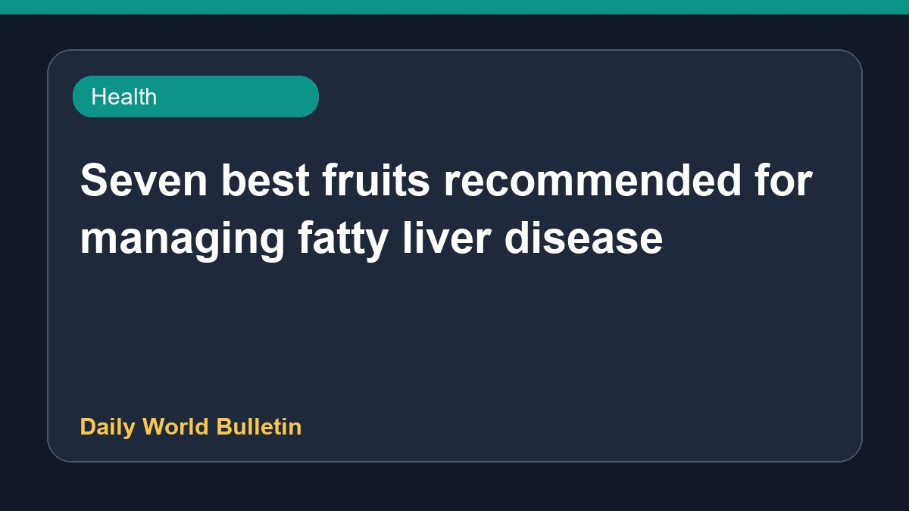

Seven best fruits recommended for managing fatty liver disease

Recent health reports highlight seven fruits recommended by gastroenterologists to support individuals dealing with fatty liver disease. Maintaining liver health often involves dietary adjustments alongside weight management. According to related studies, shedding five to ten percent of total body weight can positively impact both fatty liver conditions and diabetes. While specific details regarding the entire list of recommended fruits are limited in the provided information, incorporating these dietary changes is widely suggested for overall metabolic and liver wellness.
Original source: Health News Sources
7 best fruits for fatty liver to include in your diet - Moneycontrol.com ↗
7 best fruits for fatty liver to include in your diet - Moneycontrol.com ↗